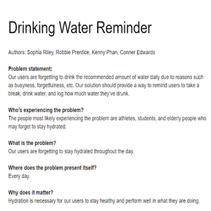
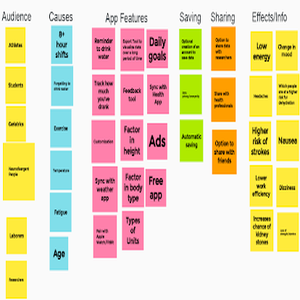
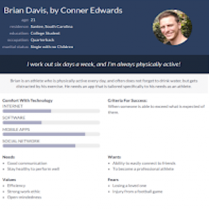
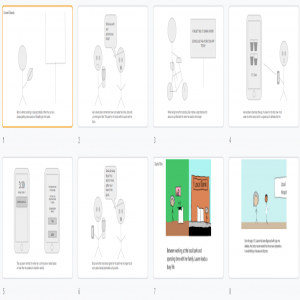
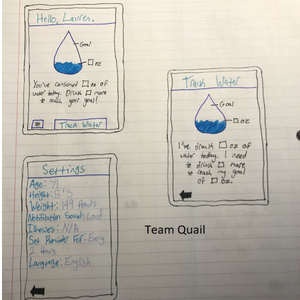
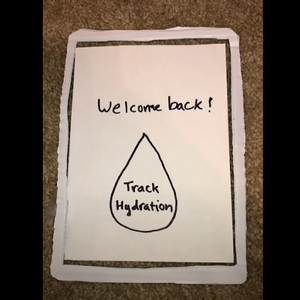
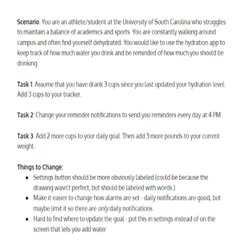

Problem Statement: Hydration Reminder
Our users are forgetting to drink the recommended amount of water daily due to reasons such as busyness, forgetfulness, etc. Our solution should provide a way to remind users to take a break, drink water, and log how much water they’ve drunk.
Affinity Diagram: Hydration Reminder
My group and I used this affinity diagram to develop ideas for our app.
Persona: 4 Personas for Hydration App
Personas for the various types of people who would use our app.
Storyboard: Brian Davis
A storyboard illustrating how a user could use our app.
Sketch: Hydration App
Sketches of possible designs for our hydration app.
Paper Prototype: Hydration App
An interactive paper prototype used to find and evaluate issues with our proposed app.
Usability Testing: Hydration App
A scenario and tasks used to determine the feasibility of the paper prototype.
Low-fi Prototype: Hydration App

A low-fidelity prototype of the hydration app based on the paper prototype and usability testing.
Hi-fi Prototype: Hydration App

A high-fidelity prototype edited based on the low-fi prototype.